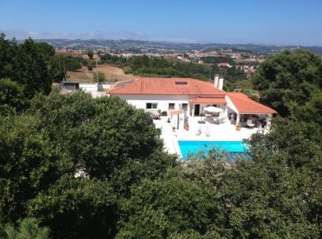
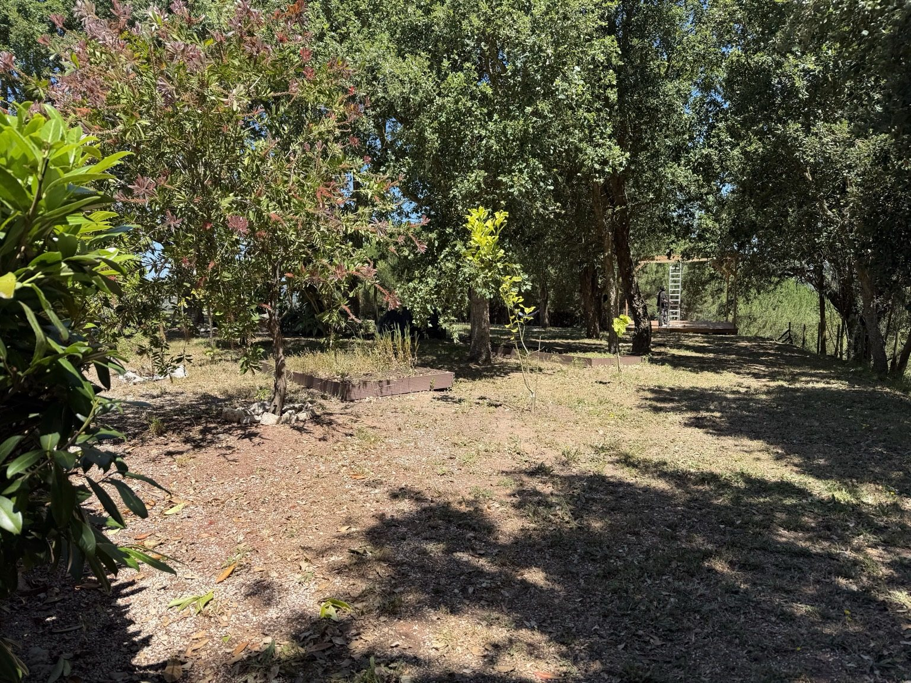
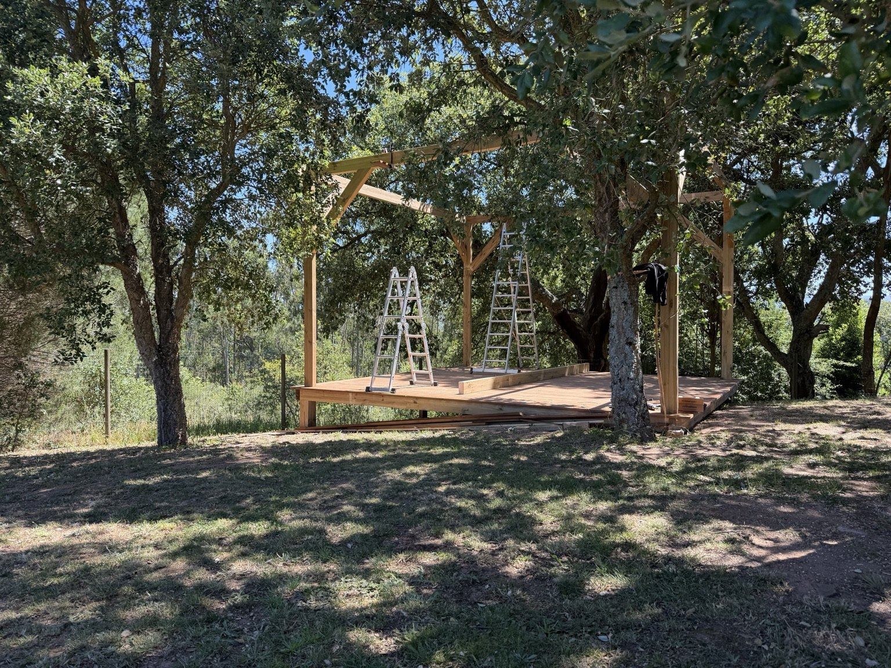
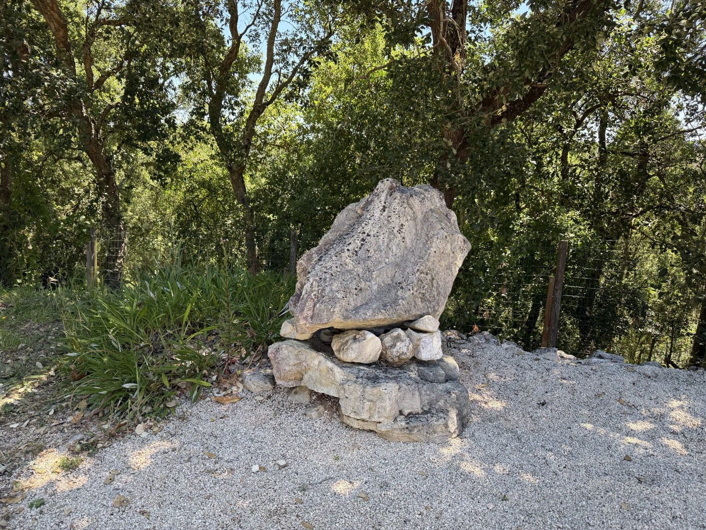
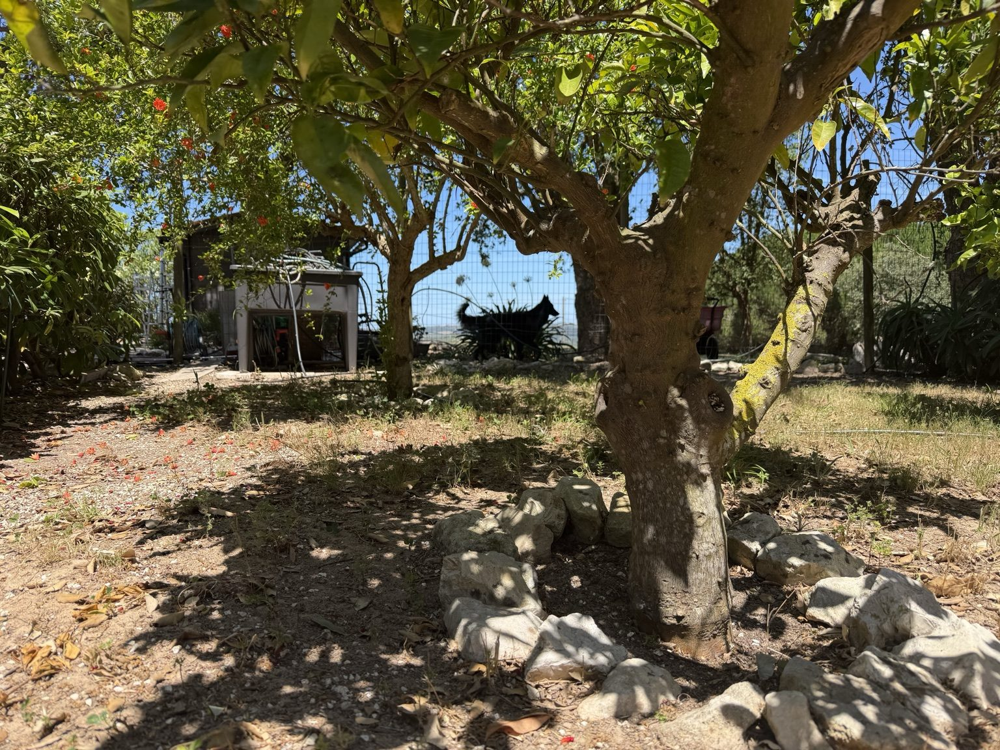

The Vision
A future space where people can pause, reflect and begin to find their bearings.
The Pathfinder Project
A long-term vision to create a future environment for reflection, wellbeing, connection and personal growth on Portugal's Silver Coast.
Mission becoming reality
The Pathfinder Project grew from the belief that healing and growth are not always confined to a therapy room. Nature, movement, reflection, community and therapeutic support can all help people rediscover direction when the path ahead feels uncertain.
Visual story
A future space where people can pause, reflect and begin to find their bearings.

Located near Alcobaça, Nazaré and São Martinho do Porto, between coast and countryside.

Woodland, shade and open space create opportunities for quiet reflection and connection with nature.

The first outdoor gathering space is taking shape beneath mature trees.

Like a cairn marking a route across difficult terrain, Pathfinder exists to help people find direction.
Project journey
Creating a space aligned with Pathfinder's values: safety, recovery, resilience and meaningful human connection.
Developing the environment and building the foundations for future wellbeing activity.
Bringing people together through shared experiences, reflection, outdoor space and community.
A future project supporting wellbeing, resilience, growth and recovery.
Latest project update
Construction has begun on the first outdoor gathering space beneath the mature trees. This area is intended to support future wellbeing activities, workshops, reflection and community events as the project develops.
Support the Project →

Looking ahead
Future activity may include veteran wellbeing retreats, reflective workshops, peer support programmes, resilience and recovery events, outdoor wellbeing experiences and nature-informed therapeutic programmes. Pathfinder will develop this carefully, ethically and at a pace that protects clinical quality and participant safety.
Impact reporting
Our foundation impact report brings together Pathfinder's mission, Armed Forces Covenant commitment, veteran leadership, community support and The Pathfinder Project.
Download Impact Report →"You don't stop the waves. You learn how to navigate them."
Just a short distance from the Pathfinder Project lies Nazaré, world-famous for its giant waves and the courage of those who choose to face them. For us, Nazaré represents the challenges many people encounter throughout life — moments that can feel overwhelming, uncertain or impossible to navigate alone.
Pathfinder exists to help people find their bearings when facing those waves and to support them in discovering a path forward.
Adjust the site display to support reading, contrast and comfort.